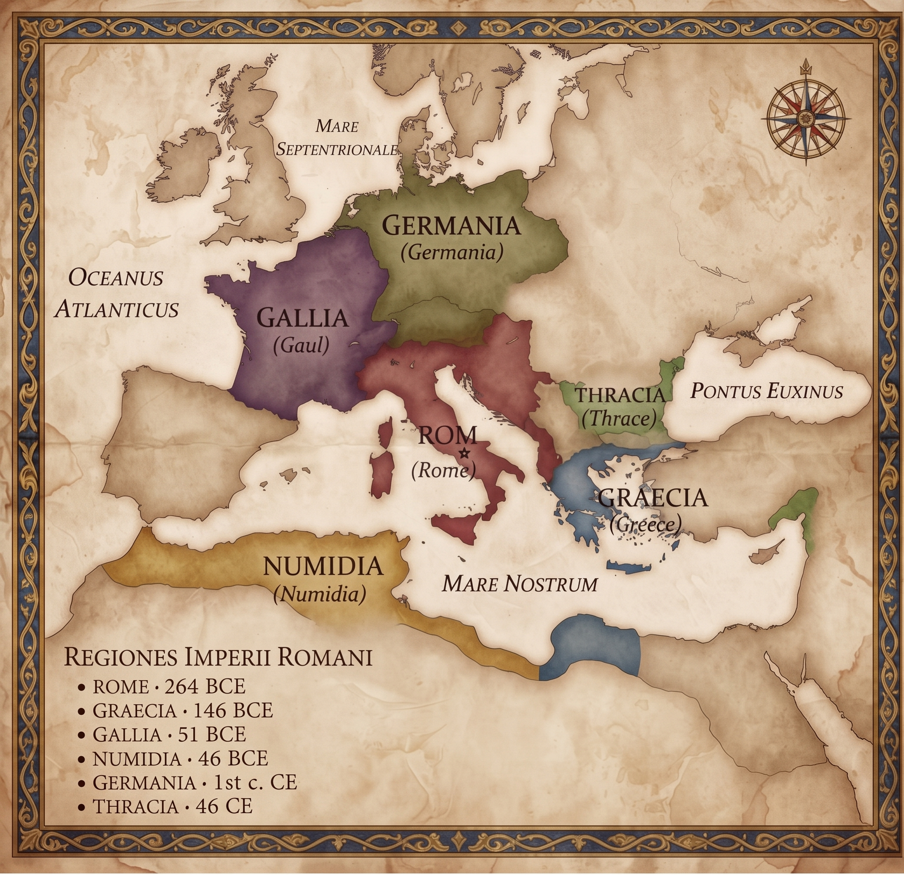

ภาพแผนที่แสดงอาณาเขตและขอบเขตดินแดนของอารยธรรมโบราณในยุคจักรวรรดิโรมัน

โรม (Rome)
ที่มา: เติบโตจากนครรัฐเล็กๆ ในคาบสมุทรอิตาลี ขยายอำนาจผ่านการทำสงครามและการเมือง จนกลายเป็นสาธารณรัฐและจักรวรรดิอันยิ่งใหญ่ที่ครอบคลุมพื้นที่รอบทะเลเมดิเตอร์เรเนียน
การล่มสลาย: ประสบปัญหาภายใน ทั้งความขัดแย้งทางการเมือง วิกฤตเศรษฐกิจ และการคอรัปชัน ประกอบกับการรุกรานจากชนเผ่าเยอรมัน (Barbarian Invasions) ทำให้จักรวรรดิโรมันตะวันตกแตกสลายลงในปี ค.ศ. 476
นูมิเดีย (Numidia)
ที่มา: อาณาจักรโบราณของชนเผ่าเบอร์เบอร์ในแอฟริกาเหนือ (ปัจจุบันคือแอลจีเรียและตูนิเซีย) มีบทบาทสำคัญและสลับข้างเป็นทั้งพันธมิตรและศัตรูกับโรมในช่วงสงครามพิวนิก
การล่มสลาย: พ่ายแพ้และสูญเสียเอกราชให้แก่โรม หลังจากจูเลียส ซีซาร์ ยกทัพเข้าแทรกแซงและผนวกรวมดินแดนเข้าเป็นมณฑลของโรมัน (Africa Nova) ในปี 46 ก่อนคริสตกาล
กรีซ (Greece)
ที่มา: จุดกำเนิดอารยธรรมตะวันตกที่ประกอบด้วยนครรัฐอิสระ เช่น เอเธนส์และสปาร์ตาร์ โดดเด่นด้านปรัชญา ประชาธิปไตย และศิลปวัฒนธรรม
การล่มสลาย: แม้จะมีอารยธรรมที่รุ่งเรือง แต่ความขัดแย้งและสงครามระหว่างนครรัฐทำให้ประเทศอ่อนแอลง จนกระทั่งถูกกองทัพมาเกโดเนียครอบงำ และต่อมาถูกกองทัพโรมันพิชิตและผนวกเป็นมณฑล Achaea ในปี 146 ก่อนคริสตกาล
เยอร์มาเนีย (Germania)
ที่มา: ดินแดนของชนเผ่าเยอรมันหลายเผ่าที่อาศัยอยู่ทางตอนกลางและตะวันออกของยุโรป ขึ้นชื่อเรื่องความเป็นนักรบและต้านทานการขยายอำนาจของโรมาอย่างดุเดือด
การล่มสลาย: ไม่ได้ล่มสลายในลักษณะของอาณาจักรเดี่ยวเนื่องจากเป็นดินแดนของกลุ่มชนเผ่าอิสระ แต่ต่อมาดินแดนเหล่านี้ค่อยๆ ถูกกลืนเข้าสู่เส้นทางประวัติศาสตร์ยุคกลาง ผ่านการอพยพย้ายถิ่น และการปะทะสังสรรค์ทางวัฒนธรรมกับอาณาจักรโรมันจนเกิดเป็นอาณาจักรใหม่ๆ ในยุโรป
โกล (Gaul):
ที่มา: ดินแดนของชาวเซลติก (ฝรั่งเศสและเบลเยียมในปัจจุบัน) ที่มีความอุดมสมบูรณ์และมีวัฒนธรรมเผ่าที่เข้มแข็ง
การล่มสลาย: ถูกจูเลียส ซีซาร์ นำทัพเข้าโจมตีและพิชิตได้เบ็ดเสร็จในสงครามกอลลิก ส่งผลให้ดินแดนโกลสูญเสียเอกราชและถูกผนวกเป็นมณฑลสำคัญของจักรวรรดิโรมันในปี 51 ก่อนคริสตกาล
เธรซ (Thrace)
ที่มา: ภูมิภาคโบราณทางตะวันออกเฉียงใต้ของคาบสมุทรบอลข่าน ผู้คนเชี่ยวชาญการรบ และมีอารยธรรมที่โดดเด่นเรื่องศิลปะการหล่อทองคำ
การล่มสลาย: ถูกคุกคามและตกอยู่ภายใต้อิทธิพลของอาณาจักรที่ใหญ่กว่าอย่างมาเกโดเนียและโรมตามลำดับ จนกระทั่งสูญเสียอำนาจปกครองตนเองอย่างสมบูรณ์และถูกผนวกเป็นมณฑลของโรมันใน ค.ศ. 46
เลือกเมืองที่ต้องการดูแผนที่ปัจจุบันและคำอธิบายเกี่ยวกับเมืองนั้น ๆ